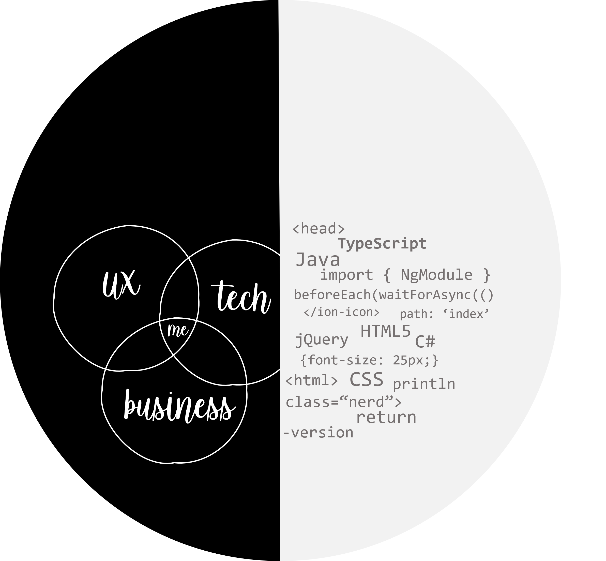

O Another Tool for Language Recognition, mais conhecido como ANTLR, é uma ferramenta utilizada para gerar compiladores. A gramática serve para validar as expressões regulares criadas para uma linguagem de programação.

UX Product Mananger, products
Websites and mobile apps,
mananger
UX Product Mananger, products
with a focus on user experience.
< coder>
Websites and mobile apps,
elegant and with efficient code.
Latest posts
Avaliação de Desempenho por Competências
Mar 31, 2021
Avaliação de Desempenho por Competências é uma análise sistemática do desempenho de cada colaborador de uma empresa. Ela mensura a contribuição de cada pessoa a partir da relação entre o desempenho...
Bootstrap
Jul 14, 2020
É um dos Framework front-end mais populares atualmente. Criado pela equipe do Twitter ele é um software livre, ou seja, tem seu código fonte aberto para a comunidade. Uma das principais características dele é ser responsivo. - “Ah, mas Thom, eu não faço...